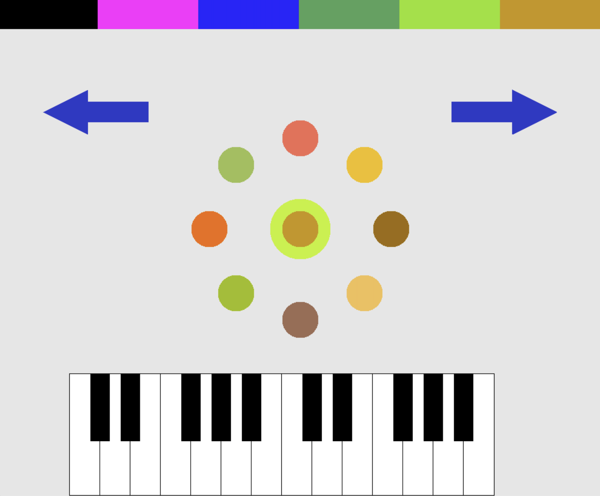

Timbreline | |
|---|---|
|
Source code can be found here.  Timbreline is an app for finding new electronic instruments. I made this with two others at the Big Red Hacks hackathon at Cornell back in late September. The theme for the hackathon was "exploration," so we decided to be a bit outside the box by exploring the space of sound. In the above image, the dots represent different timbres. Timbre (pronounced "tamber") is the part of sound that differentiates the sound of, say, a piano from a guitar. We used three different dimensions of timbre, which were represented in the color of the dots by red, green, and blue. They're all fairly complicated, but essentially blue was piano/violin-type instruments, green was flute-like, and red was more of a bluegrass/microphone feedback type of sound. The user, upon selecting a dot, can click forward to see new dots which are more similar to the one they chose, until they are too similar and we converge upon one instrument. The user can also play the piano at the bottom to test out the timbre they've selected, of course. The majority of the work was from me and my friend Thomas (our third group member was just getting into programming and preferred to sit back; we did not ostracise him). Thomas worked on the timbre part, which essentially consisted of finding a way to turn a vector into a waveform representing a timbre. I developed the entire interface, and also the exploration algorithm along with Thomas. Overall, I'm proud of what we made! I think the interface is intuitive and the concept is original. The code also looks pretty good for hackathon standards. |
|